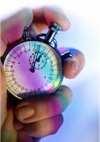

Elemente de termodinamică. Teste
Testul B
 Timp de lucru: 40'
Rezolvă şi formulează răspunsurile complete la următoarele probleme:
- Într−un termos în care se află o cantitate de apă având volumul 0,5 L, temperatura 10°C, densitatea
1000 kg/m3 şi căldura specifică 4,2 kJ/(kg·K), se pune şi un cub de gheaţă cu latura
2 cm şi temperatura -5°C. Densitatea gheţii este 900 kg/m3, căldura specifică
2,1 kJ/(kg·K) şi căldura latentă specifică de topire 333 kJ/kg.
Cât este temperatura finală a apei din termos?
- Prin arderea fiecărui kilogram de gaz metan se degajă 50 MJ sub formă de căldură.
Cât este volumul de gaz metan (în condiţii normale de temperatură şi presiune) necesar pentru a încălzi până la
40°C o cantitate de apă rece cu volumul 200 L şi temperatura iniţială 10°C?
- Cât este randamentul unui ciclu termodinamic parcurs de un gaz ideal monoatomic alcătuit dintr−o transformare
adiabatică, una izobară şi una izocoră, dacă raportul de compresie adiabatică este 8?